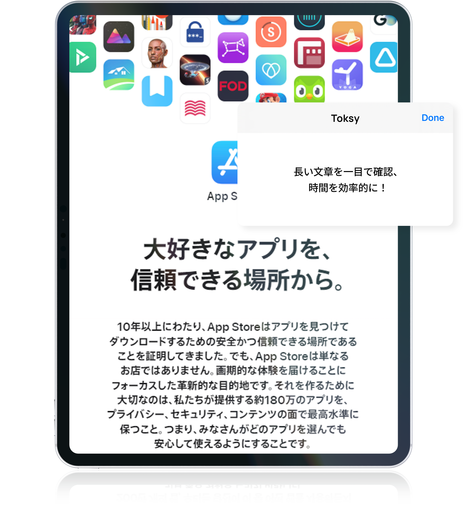
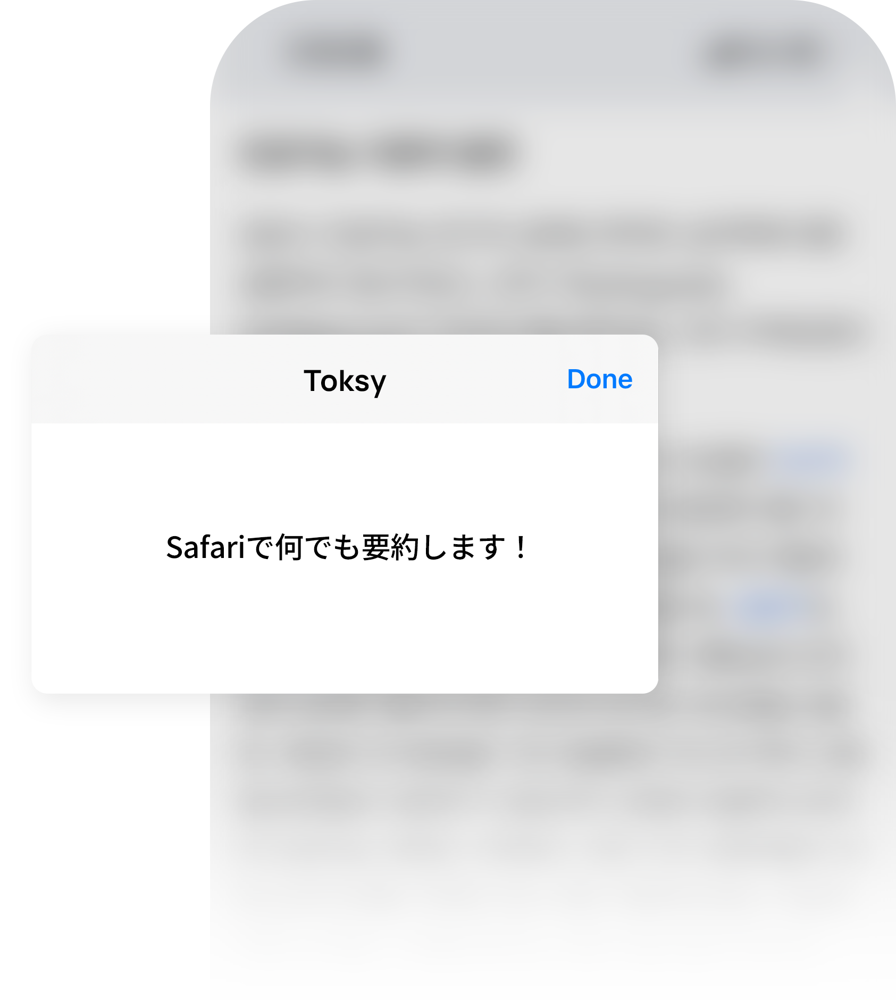
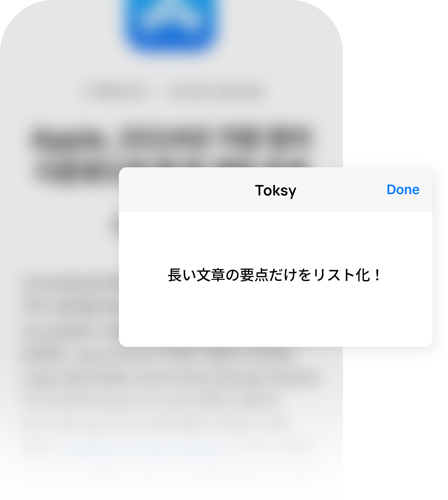
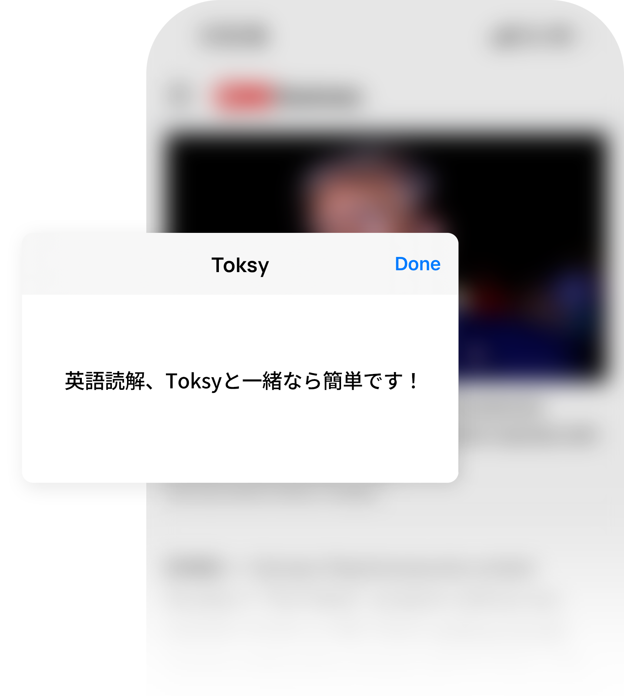
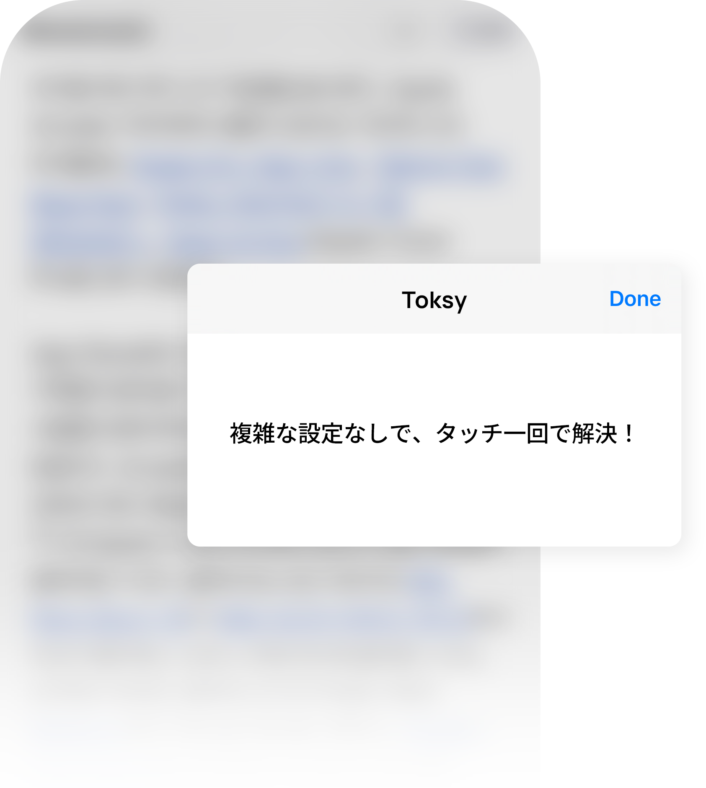
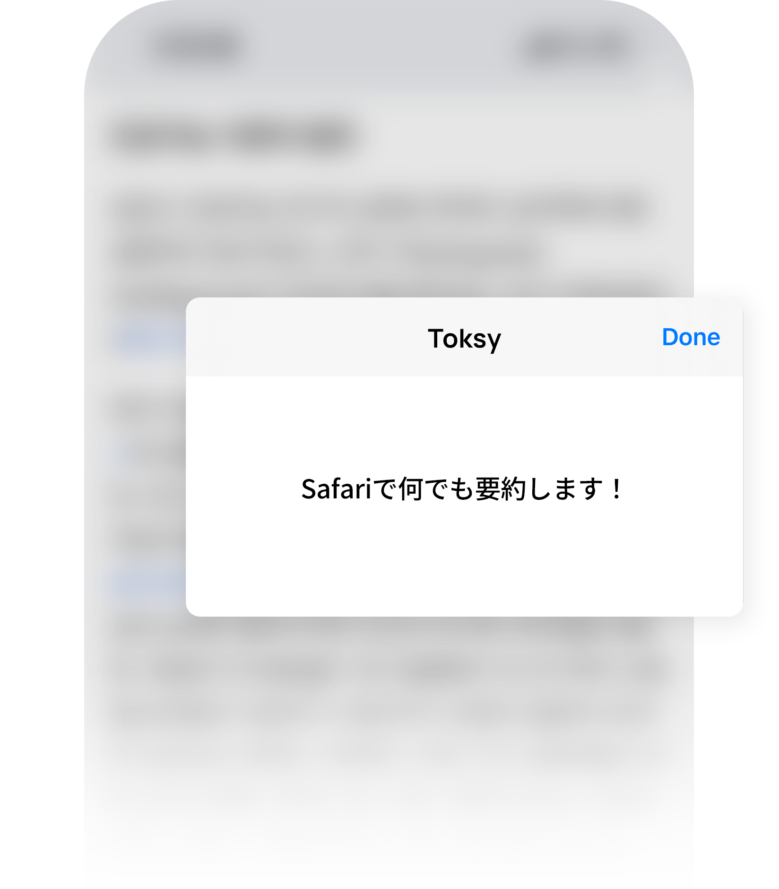
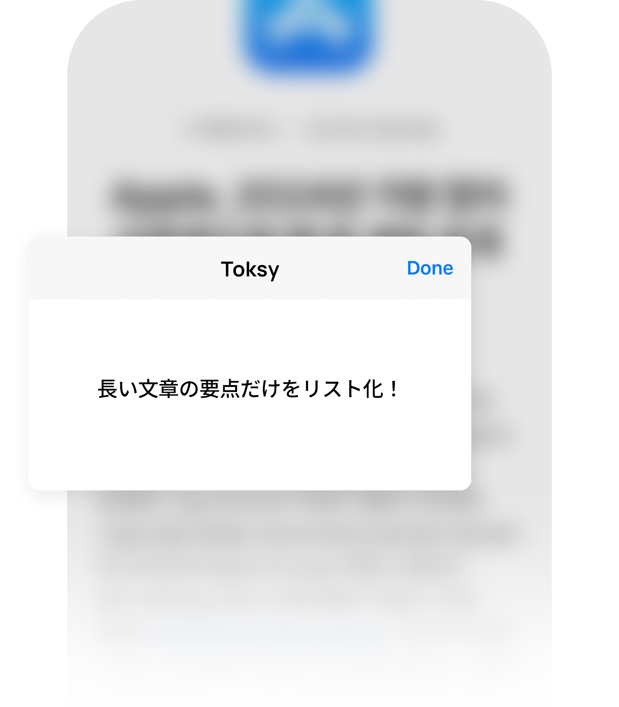
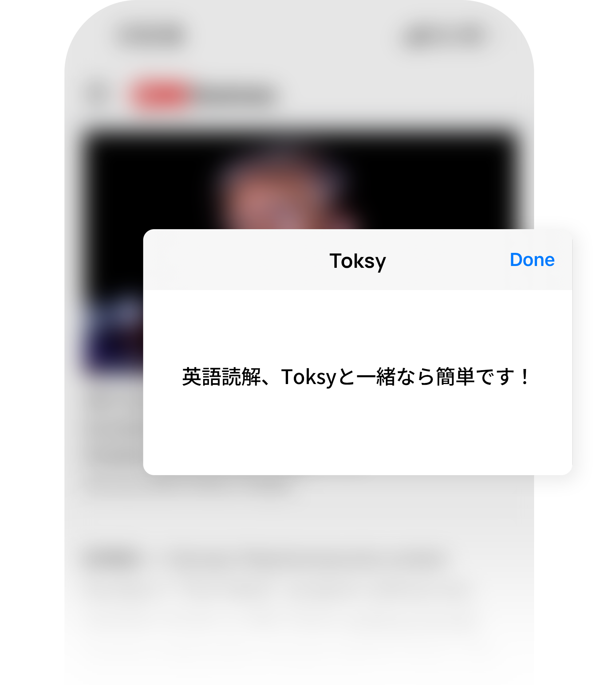
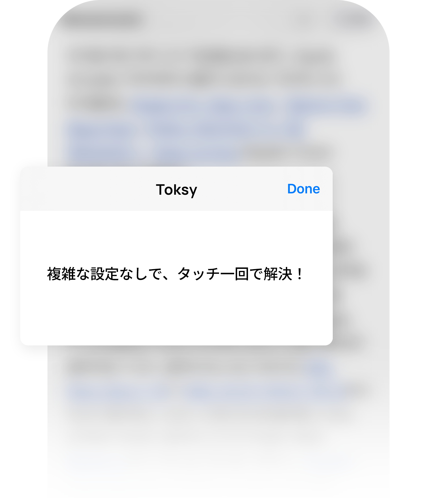

全世界のAppStoreに正式登録
韓国のAppStore
生産性部門で4位を達成
AppStoreには200万以上のアプリが登録されています。
「Toksy」はリリース後、熱い反響を受け、韓国のAppStoreで生産性部門の4位にランクインするという奇跡を達成しました。
皆さん、「トッシー」が大好きみたいですね！

AppStoreには200万以上のアプリが登録されています。
「Toksy」はリリース後、熱い反響を受け、韓国のAppStoreで生産性部門の4位にランクインするという奇跡を達成しました。
皆さん、「トッシー」が大好きみたいですね！
複雑なニュース記事や仕事のレポート、長いメール、さらにはコメントまで。
ToksyはAIを駆使して、ほんの数秒で要点を簡潔にまとめます。
Toksyと一緒に、重要な情報をスピーディに把握しましょう！

Toksyなら、重要な情報だけをリスト形式でスッキリ表示します。
余計な言葉を減らし、読みやすさを高めて、要点が一目瞭然。
忙しい仕事の合間でも、短い休憩時間でも、大事なポイントを逃さず素早く理解できます！




英語のニュースや文章が難しいと感じたことはありませんか？
Toksyの要約を読めば自信が湧いてきます。
要約で全体の流れをつかみ、原文を読むとスムーズに理解できるように！
英語力が自然に向上しますよ。




機械操作が苦手な方も心配無用。
Toksyは、タッチ一つで欲しい文章を要約します。
複雑な設定は一切不要。シンプルなインターフェースで誰でも簡単に使えます！